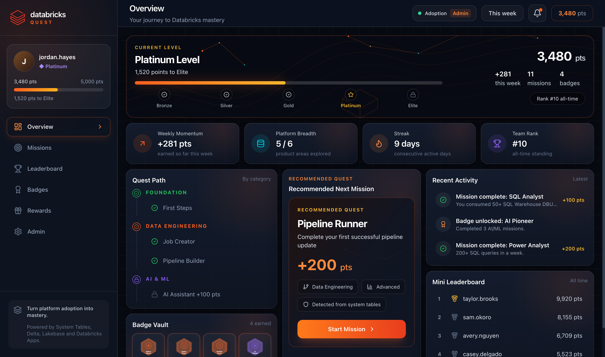
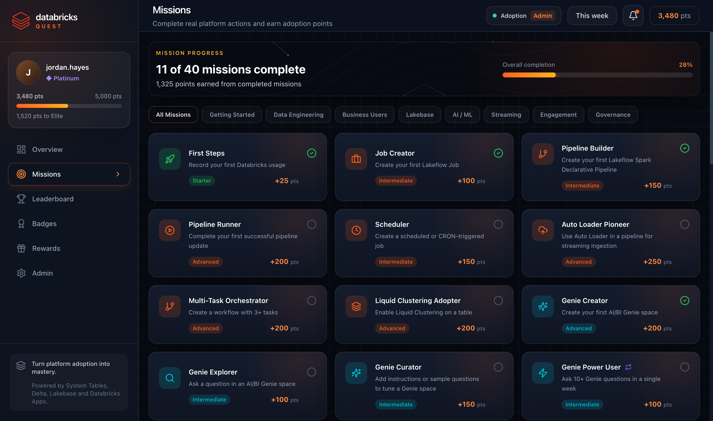
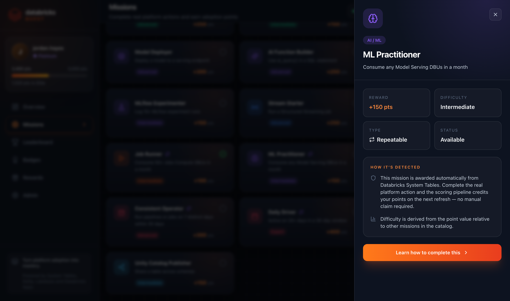
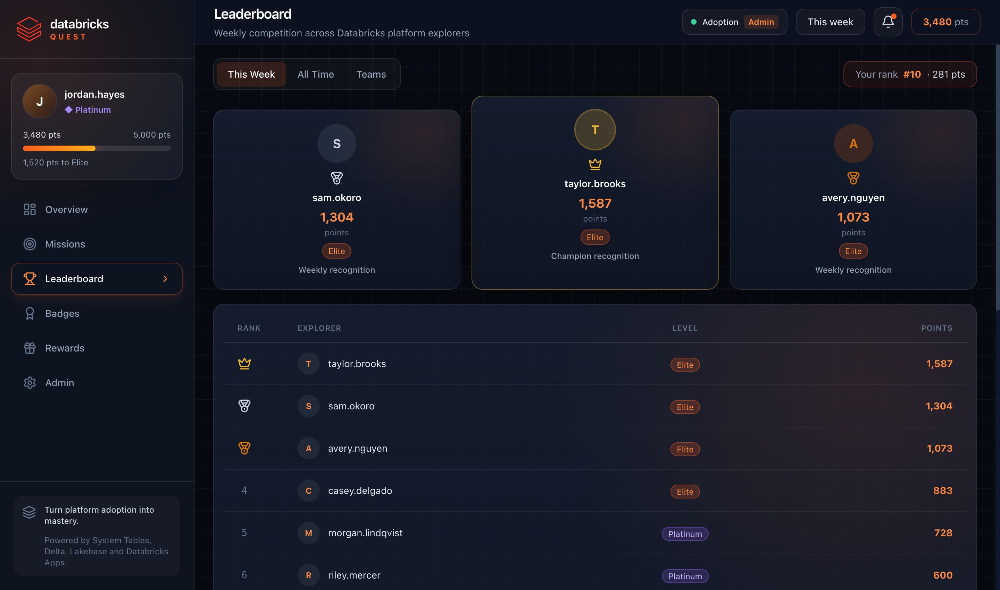

Databricks Quest rewards your team for the real work they do on the platform — building pipelines, running jobs, querying data, shipping models. Points, tiers and missions are scored straight from your Unity Catalog system tables. No manual tracking, no self-reporting.

A friendly nudge that turns platform enablement into momentum — without adding a single manual step.
Missions map to genuine platform actions across data engineering, analytics, AI/ML and governance.
Everything is detected automatically from system tables. Nobody logs anything by hand.
Weekly leaderboard, tiers and badges keep the whole team engaged and climbing.
System Tables, Delta, Lakebase and Databricks Apps. Deploys into your own workspace.
A personalised overview shows your tier, total points, weekly momentum, streak, product breadth, badges and the next mission to tackle.
Forty missions across Getting Started, Data Engineering, Business Users, Lakebase, AI/ML, Streaming, Engagement and Governance. Complete the real platform action and the points land on the next scoring run.

Every mission explains how it's detected from Databricks System Tables — reward, difficulty, type and status at a glance. No manual claim required.

See where you stand this week and all-time. The top explorers each week earn recognition, and tiers give everyone a long-term goal to climb.

A scheduled Databricks Job reads system tables, scores every mission, computes tiers and badges, and writes the results to Delta — refreshing automatically every few hours.
Total points move you up a tier — a long-term goal alongside the weekly race.
Three moving parts, all native to Databricks.
A scheduled job scans system.billing.usage, system.query.history, system.lakeflow.* and system.access.audit for real activity.
Activity is turned into mission completions, points, streaks, tiers and badges, written to Delta tables.
A Databricks App reads the scored data (via Lakebase or a SQL warehouse) and shows each person their own dashboard.
Clone the repo and run one script — it handles the app, the scoring job and the data backend.